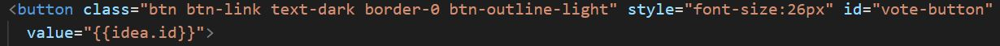
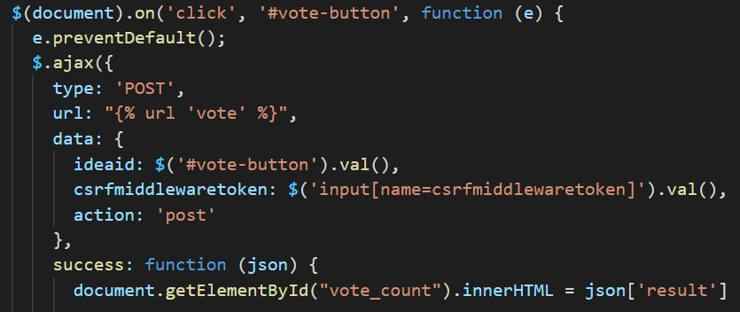
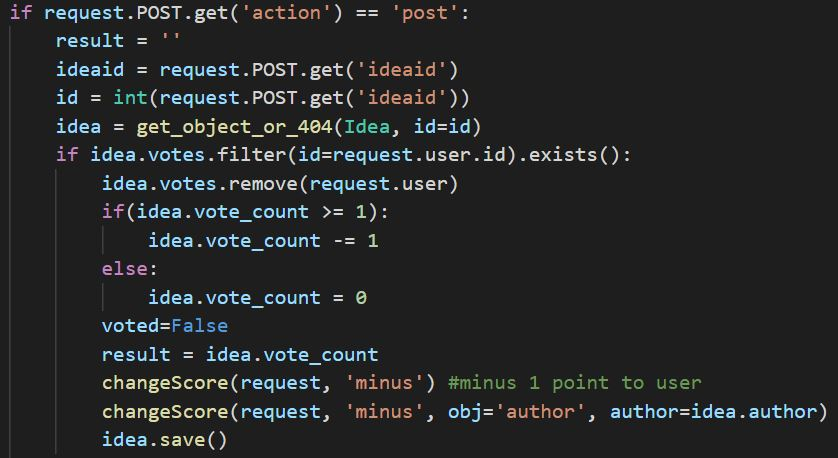
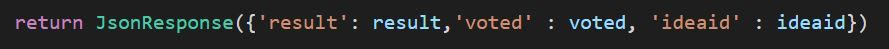

Authentication
Ullamco laboris nisi ut aliquip ex ea commodo consequat. Duis aute irure dolor in reprehenderit in voluptate velit esse cillum dolore eu fugiat nulla pariatur.
Notification
Ullamco laboris nisi ut aliquip ex ea commodo consequat. Duis aute irure dolor in reprehenderit in voluptate velit esse cillum dolore eu fugiat nulla pariatur.
Asynchronous Tasks ( signal + Celery + Redis )
For each challenge, we need the challenge state to be automatically set to ‘ENDED’ once the deadline has passed so that no more idea submissions are allowed after that. As it would be inefficient for system to compare deadline to current date every time a request is sent to retrieve challenge instance, after much research, we found a solution which is to use Celery (asynchronous task queue to run tasks in the background) to schedule tasks for changing the state of a challenge at the specified deadline. To pass messages between Django project and Celery workers, we use Redis ( in-memory key-value database) as a message broker.
To implement this, we send a signal to schedule a Celery task (to change challenge state at deadline) everytime a challenge instance is created or updated. If an active challenge deadline is updated, the old scheduled task linked to the instance is revoked and new task is scheduled to update the new eta. To manage the linking of instance to task id, a redis hash data structure is used to store mapping of instance id to task id.
Voting and Subscriptions with AJAX button
In idea detail and challenge detail page, user can vote/unvote and subscribe/unsubscribe to challenge respectively. Clicking on vote button adds user to the list of users that voted for that idea.
Ajax (using jquery) allow toggling between like and unlike which eliminates the need of reloading the page which would be time consuming and unproductive.
Javascript code on the client – When vote button is clicked, browser makes a request. Javascript code generates a XHR object (contains JS data and url to vote callback function on server) which is sent as a request object to the server.

Vote callback function – this view function handles the request by increasing/decreasing vote count of the idea object and add/remove user from list of voted users, proceeds by sending a success/failure json response which will change state of like button to blue/black in template if success.

Since the request is asynchronous, the rest of the code executes without interruptions.
CRUD ( Create | Retrieve | Update | Delete )
For each CRUD operation for ideas and challenges, a view that accepts HttpRequest and returns HttpResponse is needed. We started off by using Django generic class-based views. However, due to the complex implementation of multiple forms and fields in the view, we switched to using function-based views.
Create and Update idea/challenge + Forms
For create and update views, we render the same form template, while passing the title context as either ‘Create’ or ‘Update’ to the template variable tag.
The idea and challenge forms uses the ModelForm helper class, which removes redundancy of having to define field types again in the form and rendering individually
in template after already defining them in the model.
Some default form fields were overridden to match our project requirements, such as the select date widget for the date field, checkbox widget to select multiple tags and tinymce rich text editor.
One of the requirements was to allow challenge creator to either pick thumbnail image from a list of image provided or upload their own image.
As Django only allow one input field for each model field, we have to write custom input html tags for the thumbnail image field.
More advanced input methods such as adding new criterias as foreign key other than the available ones also require custom html tags and saving methods in view function.
List, filter and sort ideas/challenges
This is done by constructing querysets in the view function which filter/sort based on the GET request query value parameters ( vote_count, date_posted, tags etc).
Retrieve idea/challenge instance
This is done by passing object primary key (id) in request url. The dynamic field data are displayed by using template variables in the template relating to the context object given in view function that renders the template.
Drafts
If idea/challenge is submitted as draft (using draft button), the date_posted field of the object instance is left null (otherwise filled as current time) and the object will not be viewed by anyone other than the creator.
The list of drafts can be viewed by the user in the drafts tab in profile page. The Manager class is used to return querysets of posted items or drafts.
Review
Review form is implemented as a list of forms with each form mapping a criteria to a score input. Each review instance is linked to a user (reviewer) and the idea being reviewed, along with a set of criteria score pair. Total score for an idea is calculated and displayed to the challenge creator on the idea page.
Permissions

This template tag ensures that the Submit Challenge button only appears if user has create challenge permission.

Before the challenge create view function, a decorator is used to verify if request user has permission to access create challenge page. If user does not have permission, a 403 exception will be raised.
login_required decorator checks if user is logged in, if request user is not logged in, user will be redirected to the login page before going back to the requested page if login successful.
Using the django admin page, admin can create moderator user group and assign challenge create permission to moderator group. Any users added to moderator group will then have permissions to create challenges and review ideas submitted to that challenge.